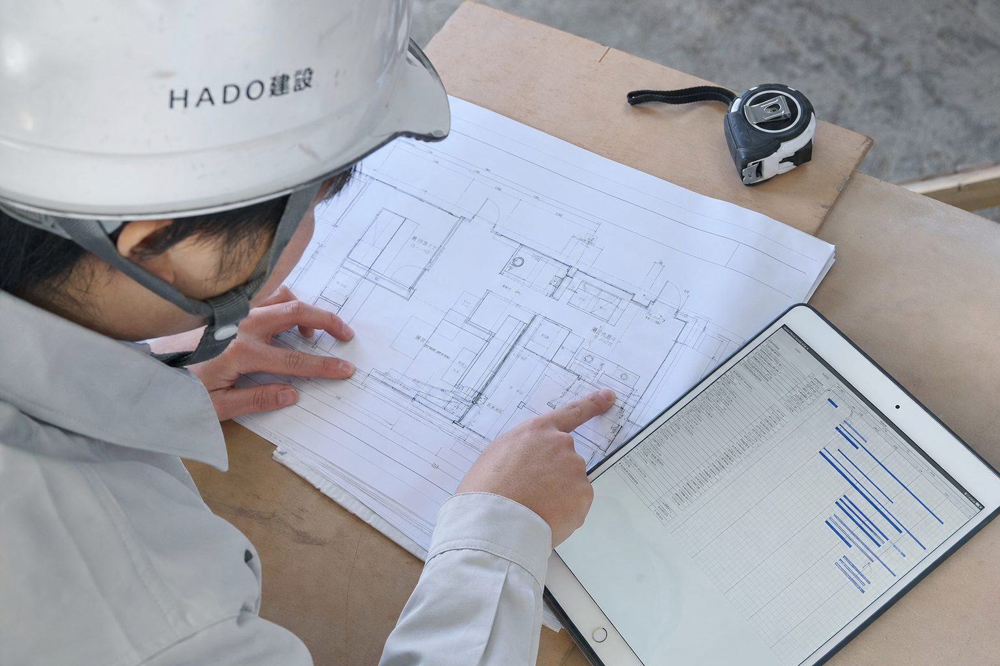
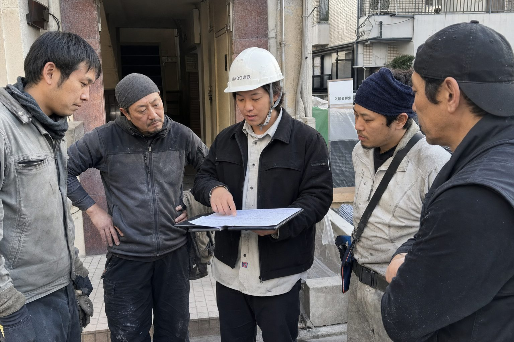
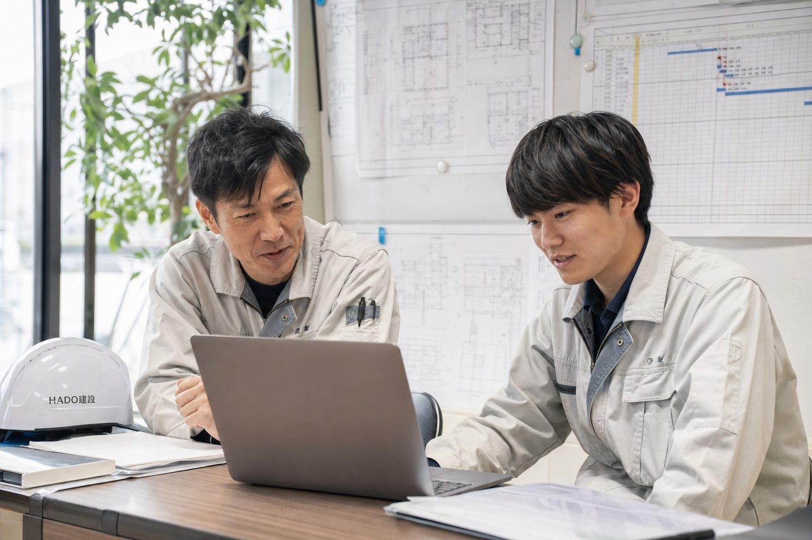

平均年齢31歳。
施工管理22名中12名が未経験入社です。
友だち追加のあと、30分のオンライン面談の日程を決めます。
履歴書不要・私服OK・話を聞くだけでもOK
施工管理って、何をする仕事？
工具を持って作業するのは職人さん。施工管理は「誰が・いつ・何を・どの順番で」やるかを決めて、工事を予定どおりに、安全に終わらせる役割です。HADO建設の現場は、マンションやオフィスの改修工事。1つの現場が1〜4ヶ月と短いので、始まりから引き渡しまでを何度も経験できます。
HADO建設は工事の8割を元請けとして受けています。派遣ではなく正社員として、自社の現場を最初から最後まで担当します。


| 未経験で入社 | 27万円〜／月 固定残業代なし。残業代は全額別途 |
|---|---|
| 経験者 | 32〜45万円／月 |
| 賞与 | 年2回（昨年実績 計4.2ヶ月分） |
| 手当 | 資格手当（2級 月1万円・1級 月3万円）／現場手当 月1万円／住宅手当 月2万円 |
残業時間は2025年度・施工管理全員の平均です。
面談はオンライン30分。履歴書はいりません
入社から半年は、先輩と2人1組で同じ現場を担当します。1人で現場を持つのは、平均で入社1年半後です。

Kさん（27歳）
入社2年目／前職：家電量販店の販売
「最初の3ヶ月は、職人さんに何を聞けばいいのかも分からなかった。でも先輩が毎朝となりにいてくれて、半年たつと段取りの組み方が見えてきました。」
Sさん（24歳）
入社1年目／前職：食品工場のライン作業
「手に職をつけたくて入社。土日がちゃんと休めるのは想像以上でした。いまは2級の勉強中です。」
※作例のため架空の社員です。実案件では実在の社員の声と写真だけを載せます。
| 職種 | 施工管理（未経験歓迎） |
|---|---|
| 雇用形態 | 正社員（試用期間3ヶ月・条件は同じ） |
| 応募資格 | 20〜29歳（長期キャリア形成のため）。建設業の経験・資格・普通免許は不要 |
| 勤務地 | 東京23区の現場（電車で移動・直行直帰あり） |
| 勤務時間 | 8:00〜17:00（休憩60分） |
| 給与 | 未経験 月給27万円〜（固定残業代なし・残業代は全額別途）／経験者 月給32〜45万円 |
| 賞与 | 年2回（昨年実績 計4.2ヶ月分） |
| 手当 | 資格手当（2級 月1万円・1級 月3万円）／現場手当 月1万円／住宅手当 月2万円（賃貸で一人暮らしの方）／交通費全額 |
| 休日 | 年間休日125日（土日祝・GW・夏季・年末年始）。土曜出勤があれば必ず振替 |
| 保険 | 社会保険完備 |
面談のあとに断っても大丈夫です
大丈夫です。施工管理22名のうち12名が未経験で入社しています。資格は入社後に会社負担で取ります。
施工管理は自分で重い物を運ぶ仕事ではありません。現場を歩いて確認する仕事なので、立ち仕事と歩くことには慣れが必要です。
最初の半年は先輩と2人1組なので、職人さんとの話し方は先輩のとなりで覚えられます。ただ、職人さんとの調整は仕事の中心です。人と話すのが苦手だと、最初はしんどいと感じるかもしれません。
なります。入社1ヶ月目に、改修工事でよく使う図面の読み方を先輩が現場で教えます。
聞けます。面談はオンライン30分で、平日19時以降・土曜も選べます。LINEで希望の時間を送ってください。
改修工事の依頼が増えているので、未経験の方を前提に採用しています。まずはLINEで、仕事内容と給与のくわしい話を聞いてみてください。
履歴書不要・話を聞くだけでもOK